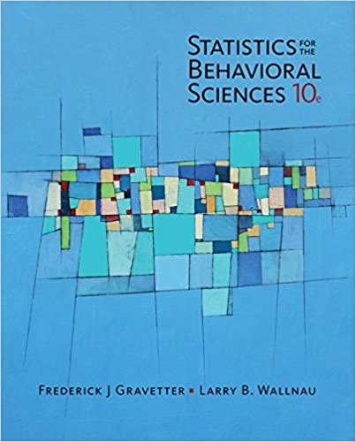

Time: 19:00 - 22:00, Thuesday
Location: Room 107, Teaching Building 5
Lecturer: Likan Zhan
Statistical procedures provide researchers with objective and systematic methods for describing and interpreting their research results. Scientific research is the system that we use to gather information, and statistics are the tools that we use to distill the information into sensible and justified conclusions. The goal of this course is not only to teach the methods of statistics, but also to convey the basic principles of objectivity and logic that are essential for science and valuable for decision making in everyday life.
This course is an introductory course of Statistics. A primary goal of this course is to make the task of learning statistics as easy and painless as possible. Topics of this course include Frequency Distribution, Centtral Tendency, Variability, z-scores, Probability and Samples, Hypothesis Testing, t-test, ANOVA, Correlation, Regression, Chi-Square test, and Binomal test etc. At the end of the course you should be able to read behavioural research that uses basic statistical methods; to undertake elementary data analysis; and to take more advanced courses in statistics, such as the course.
More specifically, you will learn:
R to analyze statistical data.
To Be Announced